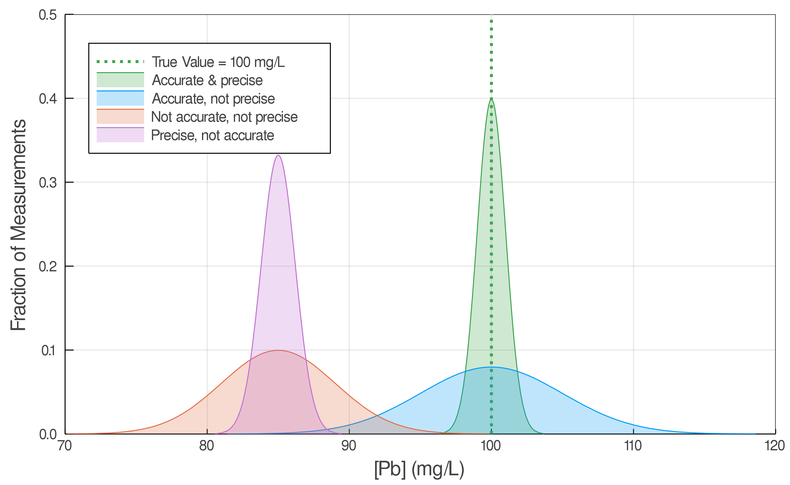
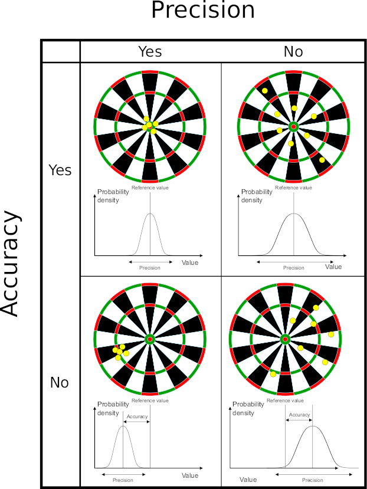
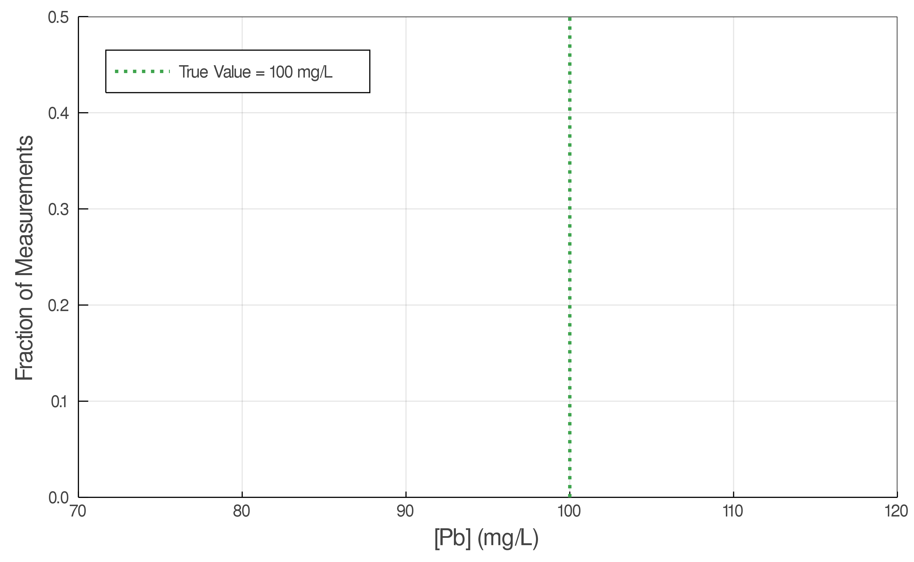
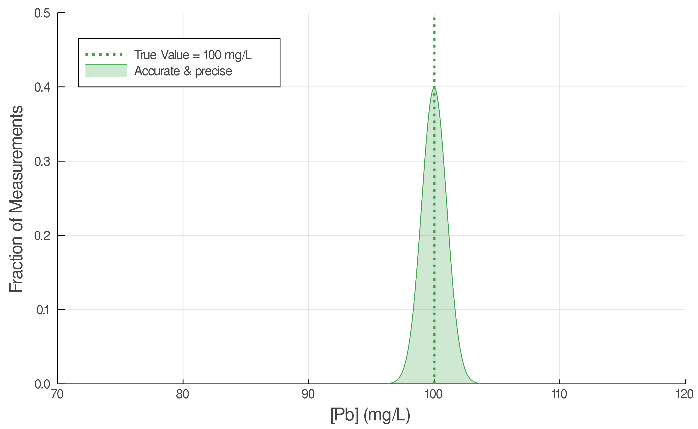
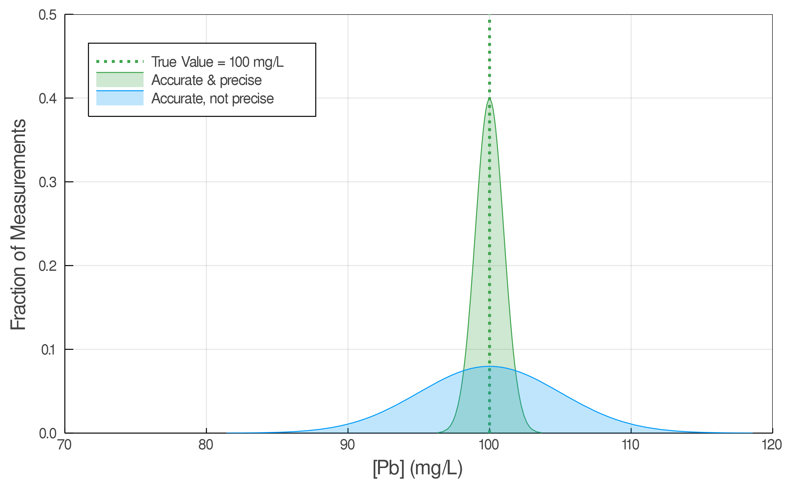
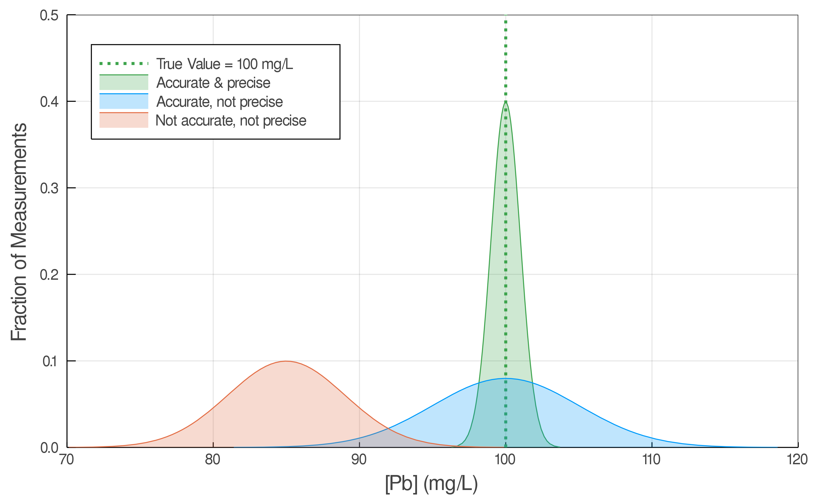
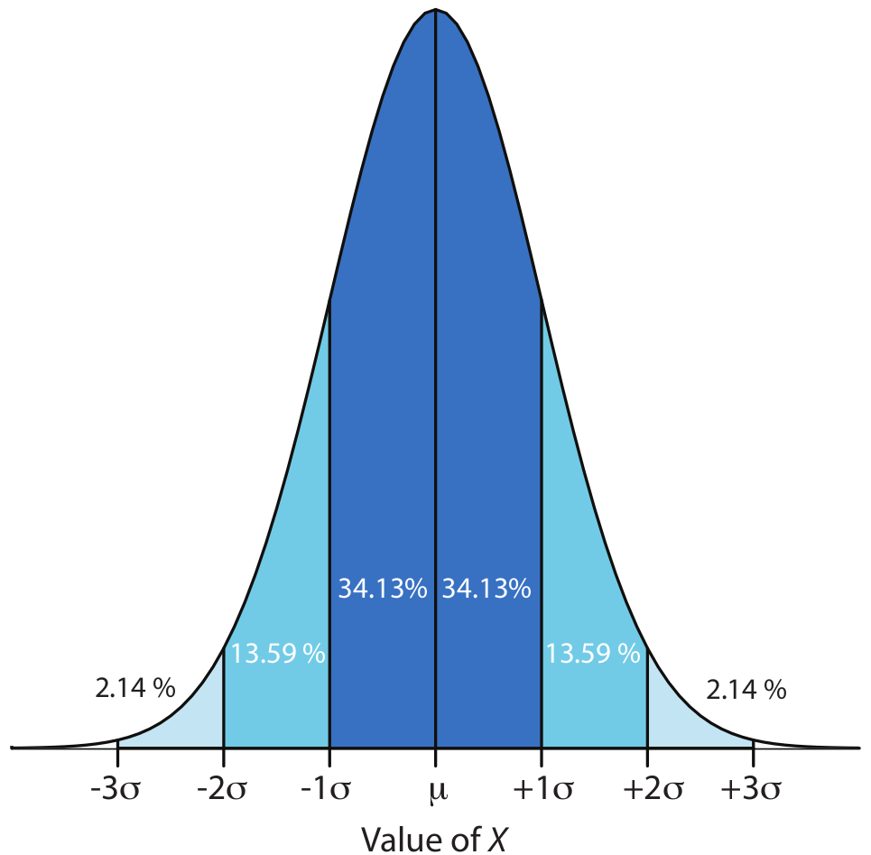
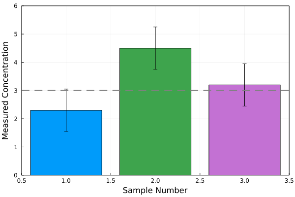
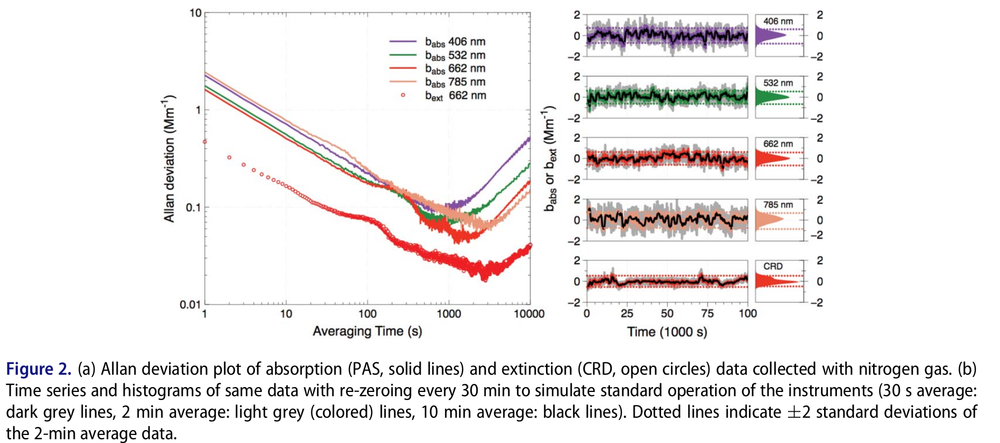

layout: true .footer[ - <div class="tooltip"><a href="/"><i class="fas fa-home"></i></a> <span class="tooltiptext">Go to C370 Main Page</span></div> - <div class="tooltip"><a href="/lecture-slides"><i class="fas fa-chalkboard-teacher"></i></a><span class="tooltiptext">Go to Lecture List</span></div> - <div class="tooltip"><i class="fas fa-question"></i><span class="tooltiptext">Press <kbd>Shift</Kbd> + <kbd>?</kbd> for Navigation Tips!</span></div> ] --- class: center <!-- ========================= Title Slide ============================= --> <div style="margin-top: 100px;"></div> <h1 style = "text-align: left; font-weight: bold; margin-left: 175px;">Week 3A: Describing Uncertainty</h1> <h5 style = "text-align: left; font-weight: bold; margin-left: 175px;">Harvey Chs 3, 4</h5>  ??? - Goal of class, esp. lab, is to learn how to know when you're likely right -- or, more importantly -- when you're not right! - Tylenol Example - If you get close to the label conc., are you right? Is the difference important? - If you are far from the label conc., are you wrong? --- # Accuracy vs. Precision  .image-credit[[Arbeck via Wikimedia Commons](https://commons.wikimedia.org/wiki/File:Accuracy_and_Precision.svg), [CC BY 4.0](https://creativecommons.org/licenses/by/4.0) ] <!-- ========================= Accuracy vs. Precision ============================= --> <div style="margin-top: 100px;"></div> <h1 style = "text-align: left; font-weight: bold; margin-left: 175px;">Rethinking Accuracy and Precision</h1> --- class: center  --- class: center  --- class: center  --- class: center  -- $$ e = \overline{X} - \mu $$ -- $$ e = \text{measured} - \text{expected} $$ --- class: center $$ e\text{ (%)} = \frac{\overline{X} - \mu}{\mu} \times 100 $$ -- $$ e\text{ (%)} = \frac{\text{measured} - \text{expected}}{\text{expected}} \times 100 $$ --- class: center --- class: center # Propagation of Uncertainty Addition / subtraction <div style="margin-top: 100px;"></div> $$ R = A + B - C $$ $$ u\_R = \sqrt{ u\_A^2 + u\_B^2 + u\_C^2 } $$ --- class: center # Propagation of Uncertainty Multiplication / division <div style="margin-top: 100px;"></div> $$ R = \frac{A \times B}{C} $$ $$ u\_R = \sqrt{ \left(\frac{u\_A}{A}\right)^2 + \left(\frac{u\_B}{B}\right)^2 + \left(\frac{u\_C}{C}\right)^2 } $$ --- # Practice You analyze a verified solution known to contain $0.55000 \pm 0.00002$ ppm Cu using a new method and determine the concentration of Cu according to: $$ S\_{Cu} = k\_{Cu} C\_{Cu} + S_{mb} $$ with $$ S\_{Cu} = 0.9648 \pm 0.0002$$ $$ k\_{Cu} = 1.571 \pm 0.001 \text{ ppm}^{-1}$$ $$ S_{mb} = 0.0501 \pm 0.0002 $$ What is the concentration of Cu and it's uncertainty? What is the error on your new method? ??? # Part I: Concentration & Uncertainty ## Concentration 1. Plug in values and solve for $C\_{Cu}$! $$ C\_{Cu} = 0.5822 \text{ppm} $$ ## Uncertainty 1. Uncertainties for $S\_{Cu}$ and $S\_{mb}$ are combined according to addition / subtraction rule (absolute uncertainty). $$ u = \sqrt{ 0.0002^2 + 0.0002^2 } = 0.0002828 $$ 1. Uncertainties for $[S\_{Cu} - S\_{mb}]$ and $k\_{Cu}$ are combined according to multiplication / division rule (relative uncertainty). $$ u = \sqrt{ \left( \frac{0.0002828}{ 0.91147 } \right)^2 + \left( \frac{0.001}{ 1.571 } \right)^2 } = 0.00070765 $$ Note that $ 0.9648 - 0.0501 $ is $0.91147$. 1. This is *relative error*! Convert back to absolute error! $$ 0.5822 \times 0.00070765 = 0.000411993 \text{ppm} $$ ## Combine it all together $$ C\_{Cu} = 0.5822 \pm 0.0004 \text{ppm} $$ # Part II: Error Remember error = $\frac{\overline{X} - \mu}{\mu}$ $$e = \frac{0.5822 - 0.55000}{0.55000} \times 100 = 5.855 \%$$ Always set up this way so the +/- signs give info about direction high or low! <!-- ========================= Confidence Intervals ============================= --> --- # Confidence Intervals > A **confidence interval** gives a range of values for an unknown parameter (e.g. a population mean). If we select a random member from a population, what is its most likely value? $$x\_i = \mu \pm z \sigma$$  --- # Confidence Intervals > A **confidence interval** gives a range of values for an unknown parameter (e.g. a population mean). Or, if we select a random member of a population, what is the most likely mean? $$\mu = x\_i \pm z \sigma$$ <!-- --> ??? For a sample, this becomes: $$\mu = \overline{X}\_i \pm t \frac{s}{\sqrt{n}} $$ ??? gives a range of values for an unknown parameter (for example, a population mean) This means that the confidence level represents the theoretical long-run frequency (i.e., the proportion) of confidence intervals that contain the true value of the unknown population parameter. In other words, 90% of confidence intervals computed at the 90% confidence level contain the parameter, 95% of confidence intervals computed at the 95% confidence level contain the parameter, 99% of confidence intervals computed at the 99% confidence level contain the parameter, etc.[2] --- # Comparing Means > If confidence intervals do not overlap there is a signficant difference.  --- # Practice An analyst determined the zinc content of a solution and obtained the data below. What is the concentration of zinc in solution and the 95% CI? Assuming the solution is known to contain 6.0 $\pm$ 0.2 ppm Zn, determine if there is a significant difference between the measured and expected concentrations. | Replicate | [Zn] (ppm) | | :-------: | :--------: | | 1 | 5.4 | | 2 | 2.9 | | 3 | 4.7 | | 4 | 2.7 | | 5 | 5.1 | | 6 | 4.8 | | 7 | 7.2 | | 8 | 6.6 | | 9 | 3.8 | ??? - $\overline{X} = 4.8$ - $s = 1.5$ - $n = 9$ so D.O.F = $8$ - From *t*-table: $t = 2.306 (\alpha = 0.05)$ $$ CI = t \frac{s}{\sqrt{n}} = 2.306 \frac{1.5}{\sqrt{9}} = 1.2 \text{ppm} $$ $$\overline[Zn] = 4.8 \pm 1.2 \text{ppm} $$ Thus, --- # Limit of Detection  .image-credit[Fischer and Smith (2018) [AS&T](https://www.tandfonline.com/doi/full/10.1080/02786826.2017.1413231)] --- # Limit of Detection <img src="img/chapter-4/lod.png" style = "height:350px; margin-left: auto; margin-right: auto; display: block;"> ??? - **Type 1 Error:** False positive - **Type 2 Error:** False negative # Limits of Detection - Lower Limit of Detection $$ LOD = S\_{mb} + 3s\_{mb} $$ or $$ LOD = \frac{3s\_{mb}}{k\_A} $$ - Lower Limit of Quantitation $$ LOD = S\_{mb} + 10s\_{mb} $$ or $$ LOD = \frac{10s\_{mb}}{k\_A} $$ <!-- =============================================================================== -->